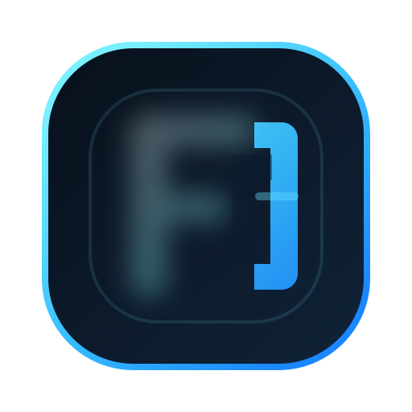

Forma operating system logo direction
Use `F` for the icon. Keep the full name in the wordmark.
For this product, the cleanest system is a strong single-letter icon plus the full product name alongside it. `FOS` works better as shorthand in decks, docs, or internal references than as the primary mark.
Stronger at favicon size
Less acronym-y
More premium brand behavior
Still scalable across product UI

FormaOS
Forma Operating System
F Primary
The icon becomes a real monogram instead of trying to spell everything inside the badge. That is usually the better logo behavior.
Recommended
Light Surface
FOS Alternative
`FOS` can work, but it starts to feel more like an acronym lockup than a clean icon. Better as a secondary shorthand than the main mark.
FOS Dark
FOS Light
Small-Size Check
This is where the decision usually gets made. Single-letter marks nearly always stay cleaner once the icon gets tiny.
64px F
40px F
32px FOS
24px FOS
My recommendation: use `F` as the icon, `FormaOS` as the everyday wordmark, and keep `Forma Operating System` as the full-form descriptor.